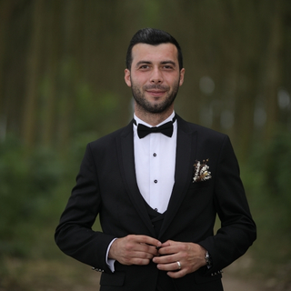

Uğur Semizoğlu Portfolio

Description
The purpose of creating this website is to create a system where I can test my old and new knowledge, that is why I am taking this course and I want to put my mind at ease.
Education
Work Experience
- Türk Telekom
- Türkiye Futbol Federasyonu - Futbol Hakemi
- Maxioutlet
- Creart Ajans
- İkarus Creative
- Alya Web
Skills
- Front End Development
- Backend Development
- Football Referee
- Team Management
- Team Leader
Certification
- Linux System Administration, 2020
- Personal Information Security, 2020
- Build Your Website Without Code with Drupal, 2020
- Building a CMS from Scratch with Codeigniter, 2020
- PHP Object Oriented Programming, 2015
- Product Development at Facebook, 2014
- Learn English Basics - Elementary Method For Beginners One, 2014
- Popular C# Projects With Source Codes, 2014
- English Punctuation Made Easy, 2014
- Search Engine Optimization (SEO) for Websites, 2013
- Php Beginner's Guide, 2013
- Using Facebook for Organizations, 2013
- Mysql Management with Phpmyadmin, 2013
- Creating Manageable Sites with Php, 2012